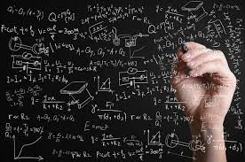

<ion-header translucent="true">
  <ion-toolbar>
    <ion-title class="text-center text-white">
      Calculo de raices
    </ion-title>
  </ion-toolbar>
</ion-header>

<ion-content fullscreen>
  <div class="ion-padding">
    <ion-card class="bg-gradient-to-r from-indigo-600 via-purple-500 to-pink-500">
      <div class="flex flex-col items-center gap-4">
        <div class="flex flex-col justify-center items-center">
          <ion-card-subtitle class="text-xl text-white">
            Calculo de Raíces 
          </ion-card-subtitle>
          
          
        </div>
  
        <div class="text-center">
          <ion-card-header>
            <ion-card-title class="pb-3 text-lg text-white"></ion-card-title>
            <ion-label class="text-gray-200 text-justify text-lg font-bold italic">
              En esta pestaña podra calcular la raices de una ecuacion cuadratica.
            </ion-label>
          </ion-card-header>
        </div>
      </div>
    </ion-card>
  </div>

  <ion-title class="text-center text-black">
    Una ecuación cuadratica se compone de:
  </ion-title>
  <div class="flex flex-row items-center justify-center space-x-4 p-4">
    <ion-card class="w-10 h-10 bg-gradient-to-r from-red-500 to-purple-700">
      <ion-card-header>
        <ion-card-title class="text-white">A</ion-card-title>
      </ion-card-header>
    </ion-card>
    X <sup>2</sup> +
    <ion-card class="w-10 h-10 bg-gradient-to-r from-blue-500 to-blue-700">
      <ion-card-header>
        <ion-card-title class="text-white">B</ion-card-title>
      </ion-card-header>
    </ion-card>
    X +
    <ion-card class="w-10 h-10 bg-gradient-to-r from-green-500 to-green-700">
      <ion-card-header>
        <ion-card-title class="text-white">C</ion-card-title>
      </ion-card-header>
    </ion-card>
    = 0
    
  </div>


 


  <div class="grid grid-cols-1 md:grid-cols-2 gap-4 p-3">
    <ion-item>
      <ion-label position="floating">Coeficiente A</ion-label>
      <ion-input type="number" [(ngModel)]="a"></ion-input>
    </ion-item>
  
    <ion-item>
      <ion-label position="floating">Coeficiente B</ion-label>
      <ion-input type="number" [(ngModel)]="b"></ion-input>
    </ion-item>
  
    <ion-item>
      <ion-label position="floating">Coeficiente C</ion-label>
      <ion-input type="number" [(ngModel)]="c"></ion-input>
    </ion-item>

    
  
    <ion-button expand="full" (click)="calcularRaices()">Calcular Raíces</ion-button>
  
    <ion-card *ngIf="raiz1 !== undefined && raiz2 !== undefined">
      <ion-card-header>
        <ion-card-title>Resultados</ion-card-title>
      </ion-card-header>
      <ion-card-content>
        <p>Raíz 1: {{ raiz1 }}</p>
        <p>Raíz 2: {{ raiz2 }}</p>
      </ion-card-content>
    </ion-card>

    <ion-card *ngIf="raiz1 === null">
      <ion-card-header>
        <ion-card-title>No exiten raíces de esta ecuación en el campo de los números Reales</ion-card-title>
      </ion-card-header>
    </ion-card>
    
    
    
  </div>
</ion-content>


